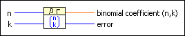
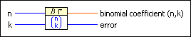
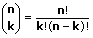

Binomial Coefficient VI
Owning Palette: Discrete Math VIs
Requires: Full Development System
Calculates the binomial coefficient for nonnegative integer values of n and k.

 Add to the block diagram Add to the block diagram |
 Find on the palette Find on the palette |
Owning Palette: Discrete Math VIs
Requires: Full Development System
Calculates the binomial coefficient for nonnegative integer values of n and k.

| Add to the block diagram |
Find on the palette |
 |
n is any nonnegative integer. |
|
k is any nonnegative integer. |
 |
binomial coefficient (n,k) is the result of the calculation of the binomial coefficient for the given values of n and k. |
 |
error returns any error or warning from the VI. You can wire error to the Error Cluster From Error Code VI to convert the error code or warning into an error cluster. |
The following equation defines the binomial coefficient.

Binomial coefficients can have many digits, even in the case of relatively small numbers n and k. The data type most suited for the binomial coefficient is a double real. You can directly calculate the factorial functions, n!, k!, and (n – k)!, with the (Incomplete) Gamma Function VI.